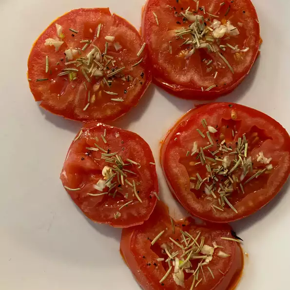

Baked Tomato Slices

Turn tomatoes into comfort food
Best thing to do for tomatoes is to bake them and use in almost any food
ingredients
- Olive oil
- Large tomato
- Clove of garlic, minced
- salt and ground black pepper to taste
Steps
- Buy ingredients
- Preheat oven to 150 C
- Cut tomato to small slices and put them in tray
- Put into oven for 5 minutes
- Voila!
homepage